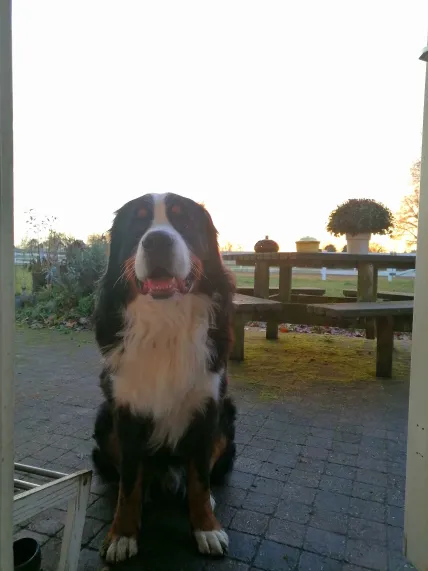

Barli onze hond
Nikoleta TsitsoliBarli onze hond is een mountain bernese mountain hond. De Berner Sennenhond is een grote, vriendelijke hond die gehecht is aan zijn gezin. Berners zijn vrolijk en sociaal, maar kunnen ook eigenwijs en zelfstandig zijn. Ze hebben redelijk veel, maar goed gedoseerde, beweging nodig. Helaas zijn ze gevoelig voor onder andere gewrichtsproblemen en worden ze gemiddeld niet zo oud. De Berner Sennenhond past bij een eigenaar die graag buiten is met zijn hond, duidelijk maar geduldig leiding geeft en de tijd neemt voor de benodigde vachtverzorging.
Barli
De Berner sennenhond is een krachtig gebouwde sennenhond van Zwitserse afkomst. De hond heeft een schofthoogte van 64-70 cm (reu) of 58-66 cm (teef) en is overwegend zwart met bruinwitte aftekeningen op kop, borst en poten. De vacht is lang en golvend. De naam van het ras verwijst naar kanton Bern waar deze hond gefokt werd. Het Duitse woord "Senn", ook wel "Senner" of "Sennerin", betekent herder van Alpweiden, het woord "Senne" wordt ook wel voor de Alpweide zelf gebruikt.